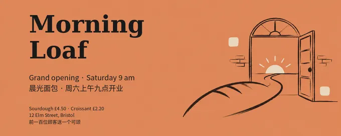
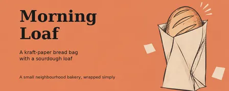
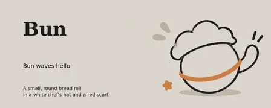
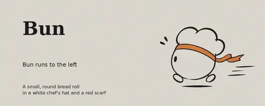
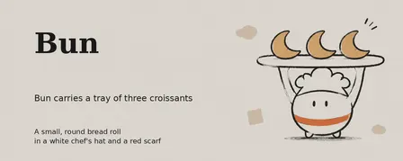
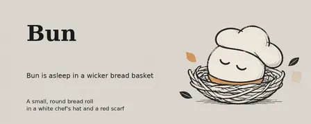

aehyok/generate-article-cover-image: image test, 2026-11-08
The same brief for every skill: a 3:4 poster for a made-up bakery with six exact lines of English and Chinese text, a square photo of a kraft-paper bag printed with the shop's name, and four square pictures of one mascot in four poses. Claude Code (Claude Opus 5.5) made them with the skill in a throwaway sandbox; every image call went to the newest model of the family the skill asked for (GPT Image 2.6, Nano Banana 2.1 or FLUX 3). 3.0 minutes; 6 image calls ($0.051), drawn by gpt-image-2.6-ext. All results · The brief · How it is scored
Result
Broke a rule · a look of its own
- all six 5:2
- text on the mascot pictures
- the mascots less alike (judge 4/5)
The pictures












The text, read letter by letter
Read by OCR (macOS Vision, five passes); a line OCR could not find as written was looked at by hand.
| Asked for | Written |
|---|---|
| Morning Loaf | right |
| Grand opening · Saturday 9 am | right |
| 晨光面包 · 周六上午九点开业 | right |
| Sourdough £4.50 · Croissant £2.20 | right |
| 12 Elm Street, Bristol | right |
| 前一百位顾客送一个可颂 | right |
| Morning Loaf (on the bag) | right |
The mascots (judged by a vision model)
| Same character in all four (1-5) | 4 |
|---|---|
| Poses as asked (of 4) | 4 |
| Chef's hat and red scarf in all four | yes |
| Text on them | yes |
The judge's note: All four depict the same round bun with a white chef's hat and orange-red scarf in the requested poses, but prominent text appears in every picture.
How it went (the session's closing message)
I made all six pictures with the installed `generate-article-cover-image` skill. It generated each background with OpenAI's image API using the skill's own prompt template, then its script added the text. All six are 1600×640 PNGs. I checked them visually, and the text is spelled correctly.
- **`poster.png`:** all six lines appear exactly as written, including the `·`, `£` and Chinese characters. The picture is a hand-drawn loaf path leading to an open door with a rising sun. The background is terracotta, the colour the skill picks for craft and making.
- **`product.png`:** a line drawing of a kraft bag with a scored loaf poking out of the top, also on terracotta.
- **`mascot-1.png` to `mascot-4.png`:** a round line-drawn Bun with a puffy chef's hat and a red band as the scarf, on the skill's warm grey. The four poses match the brief: waving, running left, holding a tray of three croissants, and asleep in a woven basket.
Things you should know:
- **Mascot consistency is loose.** The body, hat and red scarf repeat, but the face changes: Bun has no face in `mascot-1`, and the scarf sits in a different place on each body.
- **"Morning Loaf" is not printed on the bag.** It is set as the title beside the bag, because the skill adds text with a script rather than letting the image model draw it.
- **I worked around a bug in the skill's line wrapping.** When it rebalances two lines it drops a space ("ared scarf", "sourdoughloaf"). I added my own line breaks so the final files read correctly; the script itself is unchanged.
Brief vs. skill: this skill only makes 5:2 article-cover banners. Every image has a three-part text block, and the skill wants simple line drawings instead of realistic objects. So the brief's 3:4 poster and 1:1 squares, the "no text" rule for the bag and mascots, and the photo-style studio bag could not be met.
DELIVERABLE: ~/work/output/